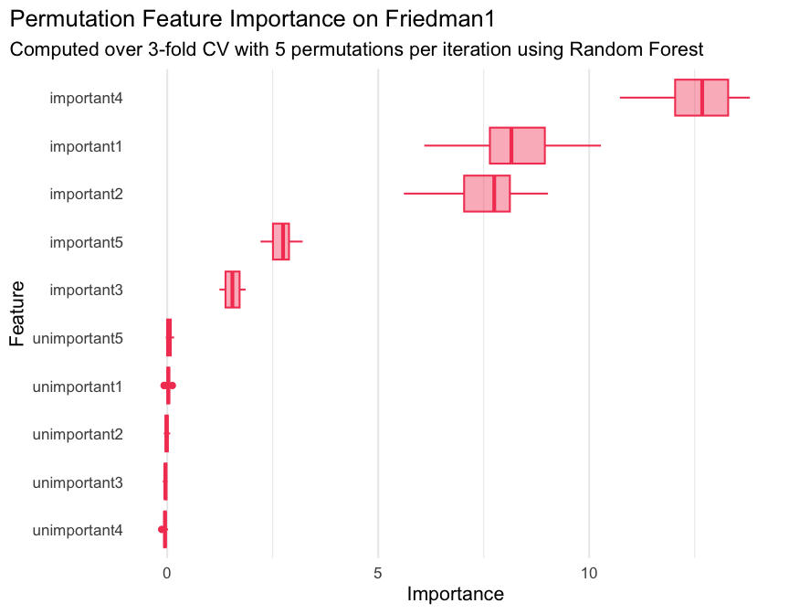

The goal of xplainfi is to collect common feature importance methods under a unified and extensible interface.
It is built around mlr3 as available abstractions for learners, tasks, measures, etc. greatly simplify the implementation of importance measures.
Installation
Once released, you can install xplainfi from CRAN:
install.packages("xplainfi")You can also install xplainfi from R-universe:
install.packages("xplainfi", repos = c("https://mlr-org.r-universe.dev", "https://cloud.r-project.org"))The latest development version of xplainfi can be installed with pak:
# install.packages(pak)
pak::pak("mlr-org/xplainfi")Example: PFI
Here is a basic example on how to calculate PFI for a given learner and task, using repeated cross-validation as resampling strategy and computing PFI within each resampling 10 times on the friedman1 task (see ?mlbench::mlbench.friedman1).
The friedman1 task has the following structure:
\[y = 10 \sin(\pi x_1 x_2) + 20(x_3 - 0.5)^2 + 10x_4 + 5x_5 + \varepsilon\]
Where \(x_{1,2,3,4,5}\) are named important1 through important5 in the Task, with additional numbered unimportant features without effect on \(y\).
library(xplainfi)
library(mlr3learners)
#> Loading required package: mlr3
task = tgen("friedman1")$generate(1000)
learner = lrn("regr.ranger", num.trees = 100)
measure = msr("regr.mse")
pfi = PFI$new(
task = task,
learner = learner,
measure = measure,
resampling = rsmp("cv", folds = 3),
n_repeats = 10
)Compute and print PFI scores:
pfi$compute()
pfi$importance()
#> Key: <feature>
#> feature importance
#> <char> <num>
#> 1: important1 8.26830487
#> 2: important2 7.56661552
#> 3: important3 1.54377613
#> 4: important4 12.60915426
#> 5: important5 2.71382429
#> 6: unimportant1 0.02113506
#> 7: unimportant2 -0.01250122
#> 8: unimportant3 -0.04414584
#> 9: unimportant4 -0.05157362
#> 10: unimportant5 0.04819212If it aids interpretation, importances can also be calculated as the ratio rather than the difference between the baseline and post-permutation losses:
pfi$importance(relation = "ratio")
#> Key: <feature>
#> feature importance
#> <char> <num>
#> 1: important1 2.7167932
#> 2: important2 2.5798917
#> 3: important3 1.3234729
#> 4: important4 3.6334554
#> 5: important5 1.5680305
#> 6: unimportant1 1.0047822
#> 7: unimportant2 0.9972307
#> 8: unimportant3 0.9907595
#> 9: unimportant4 0.9890062
#> 10: unimportant5 1.0100964When PFI is computed based on resampling with multiple iterations, and / or multiple permutation iterations, the individual scores can be retrieved as a data.table:
str(pfi$scores())
#> Classes 'data.table' and 'data.frame': 300 obs. of 6 variables:
#> $ feature : chr "important1" "important1" "important1" "important1" ...
#> $ iter_rsmp : int 1 1 1 1 1 1 1 1 1 1 ...
#> $ iter_repeat : int 1 2 3 4 5 6 7 8 9 10 ...
#> $ regr.mse_baseline: num 4.56 4.56 4.56 4.56 4.56 ...
#> $ regr.mse_post : num 11.4 11.5 12.7 12.9 10.7 ...
#> $ importance : num 6.83 6.96 8.15 8.35 6.09 ...
#> - attr(*, ".internal.selfref")=<externalptr>Where iter_rsmp corresponds to the resampling iteration, i.e., 3 for 3-fold cross-validation, and iter_repeat corresponds to the permutation iteration within each resampling iteration, 5 in this case. While pfi$importance() contains the means across all iterations, pfi$scores() allows you to manually visualize or aggregate them in any way you see fit.
For example:
library(ggplot2)
ggplot(
pfi$scores(),
aes(x = importance, y = reorder(feature, importance))
) +
geom_boxplot(color = "#f44560", fill = alpha("#f44560", 0.4)) +
labs(
title = "Permutation Feature Importance on Friedman1",
subtitle = "Computed over 3-fold CV with 5 permutations per iteration using Random Forest",
x = "Importance",
y = "Feature"
) +
theme_minimal(base_size = 16) +
theme(
plot.title.position = "plot",
panel.grid.major.y = element_blank()
)
If the measure in question needs to be maximized rather than minimized (like \(R^2\)), the internal importance calculation takes that into account via the $minimize property of the measure and calculates importances such that the intuition “performance improvement” -> “higher importance score” still holds:
pfi = PFI$new(
task = task,
learner = learner,
measure = msr("regr.rsq")
)
#> ℹ No <Resampling> provided, using `resampling = rsmp("holdout", ratio = 2/3)`
#> (test set size: 667)
pfi$compute()
pfi$importance()
#> Key: <feature>
#> feature importance
#> <char> <num>
#> 1: important1 0.3538670264
#> 2: important2 0.3078201501
#> 3: important3 0.0684752046
#> 4: important4 0.5509192405
#> 5: important5 0.1324330936
#> 6: unimportant1 -0.0033190271
#> 7: unimportant2 0.0002369042
#> 8: unimportant3 -0.0020602383
#> 9: unimportant4 -0.0016842988
#> 10: unimportant5 -0.0007178819See vignette("xplainfi") for more examples.